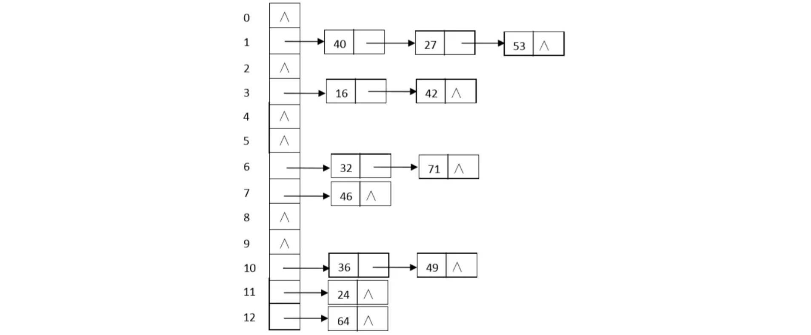

Java Map 与排序：哈希映射、Comparable 和 Comparator
- Map映射
元素之间是两两对应的，是以键值对的形式存在。
Map接口 :
//Map并不是Collection体系下的接口，而是单独的一个体系，因为操作特殊
//这里需要填写两个泛型参数，其中K就是键的类型，V就是值的类型，比如上面的学生信息，ID一般是int，那么键就是Integer类型的，而值就是学生信息，所以说值是学生对象类型的
public interface Map<K,V> {
//-------- 查询相关操作 --------
//获取当前存储的键值对数量
int size();
//是否为空
boolean isEmpty();
//查看Map中是否包含指定的键
boolean containsKey(Object key);
//查看Map中是否包含指定的值
boolean containsValue(Object value);
//通过给定的键，返回其映射的值
V get(Object key);
//-------- 修改相关操作 --------
//向Map中添加新的映射关系，也就是新的键值对
V put(K key, V value);
/根据给定的键，移除其映射关系，也就是移除对应的键值对
V remove(Object key); 注意这里有返回值 ; 可以获取键对应的值
//-------- 批量操作 --------//
将另一个Map中的所有键值对添加到当前Map中
void putAll(Map<? extends K, ? extends V> m);
//清空整个Map
void clear();
//-------- 其他视图操作 --------
//返回Map中存放的所有键，以Set形式返回
Set<K> keySet(); ----只包含key
//返回Map中存放的所有值
Collection<V> values(); ---只包含vaule
//返回所有的键值对，这里用的是内部类Entry在表示
Set<Map.Entry<K, V>> entrySet(); ---下面是其定义
//这个是内部接口Entry，表示一个键值对
interfaceEntry<K,V> {
//获取键值对的键
K getKey();
//获取键值对的值
V getValue();
//修改键值对的值
V setValue(V value);
//判断两个键值对是否相等
boolean equals(Object o);
//返回当前键值对的哈希值
int hashCode(); ... } ... }
//Map中无法添加相同的键，同样的键只能存在一个，即使值不同。如果出现键相同的情况，那么会覆盖掉之前的：
//安全插入 , 若有值不会覆盖, ;
map.putIfAbsent(2,"xiao") ;
//我们在获取一个不存在的映射时，默认会返回null作为结果
//我们也可以为这种情况添加一个预备方案，当Map中不存在时，可以返回一个备选的返回值
map.getOrDefault(3, "备胎")
//同样的，因为HashMap底层采用哈希表实现，所以不维护顺序，我们在获取所有键和所有值时，可能会是乱序的：基础的123还是可以的 , 符号就不行了
//如果需要维护顺序，我们同样可以使用LinkedHashMap，它的内部对插入顺序进行了维护
操作和HashMap<>() 内部方法相同 ; 只是维护了插入顺序 ;
遍历map , 不能直接用for , 没接口 ,但内部接口 Entry 实现了itearable接口 可以直接for ;
map.entrySet().for ; 实现迭代 ;
简单实现替换 : V
注意看这里不是BiConsumer接口( 这个不会返回值 ) 详见函数式接口
1修改现有值2如果 key 不存在，创建新值
V compute(K key, BiFunction<? super K,? super V,? extends V> remappingFunction) 需要返回一个V值 ;
map.compute(1,(key , value) -> value + "A" ) ;
map.merge(1,"qaa" , (o1 ,o2) -> o1 + o2 ); 内部是返回值的函数接口 ; = Integer:: sum ;
- 底层采用的是哈希表
哈希表可能会出现哈希冲突，这样保存的元素数量就会存在限制，而我们可以通过链地址法解决这种问题，最后哈希表就长这样了

实际上这个表就是一个存放头结点的数组+若干结点，而HashMap也是差不多的实现，我们来看看这里面是怎么定义的：
public class HashMap<K,V> extends AbstractMap<K,V>
implements Map<K,V>, Cloneable, Serializable {
static class Node<K,V> implements Map.Entry<K,V> { //内部使用结点，实际上就是存放的映射关系
final int hash;
final K key; //跟我们之前不一样，我们之前一个结点只有键，而这里的结点既存放键也存放值，当然计算哈希还是使用键
V value;
Node<K,V> next;
}
transient Node<K,V>[] table; //这个就是哈希表本体了，可以看到跟我们之前的写法是一样的，也是结点数组，只不过HashMap中没有设计头结点（相当于没有头结点的链表）
final float loadFactor; //负载因子，这个东西决定了HashMap的扩容效果
public HashMap() {
this.loadFactor = DEFAULT_LOAD_FACTOR; //当我们创建对象时，会使用默认的负载因子，值为0.75
}
}
- 比较相关接口( 和自动排序, 和sort排序密切相关 )
compareTo 实际上是因为这个类实现了Comparable接口获得的方法，我们常见的一些JDK提供的类型，如String、基本类型包装类、Date、LocalDate等，其实都实现了此接口，从而自带对于其类型对象之间的比较操作：
String s1 = "AAA", s2 = "BBB";
System.out.println(s1.compareTo(s2)); //按字典顺序比较两个字符串,比较基于字符串中每个字符的 Unicode 值。
需要实现排序功能需要自己手动implements Comparable<元素> 接口 ;
可以重写下方法;
public int compareTo(Student o) {
return age - o.age; //直接比较年龄
}
@Override
public String toString() { return"Student{" + "age=" + age + '}'; }
// 1. 传统匿名内部类写法
list.sort(new Comparator<String>() {
@Override
public int compare(String s1, String s2) {
return s1.compareTo(s2);
}
});
// 2. Lambda 表达式写法（等价于上面）
list.sort((s1, s2) -> s1.compareTo(s2)); 也可以自己实现一个规则 : s1 - s2 ;
TreeSet 内部还有Comparator接口 : 调用时也可以在构造时写入比较器( 规则 ) [ 内部自动实现的排序 ]
创建一个比较器 ; Comparator<Student> comparator = ( 比较规则 ) ;
TreeSet<元素> set = new TreeSet<>( comparator.reversed() ) ; 反转排序 ;
添加次级比较规则 : 函数式接口 -> comparator.thencomparing(o1 , o2 ) -> o1.元素.compareTo( o2.元素 ) ; 由于内部红黑数比较comparator比较结果是相等 , 那么自动判读为两元素相等, 不会实现覆盖原来Tree中的内容 ;
//上面的进阶版，可以自定义类中属性(作为key)的获取规则，并对此属性进行比较
default <U> Comparator<T> thenComparing(
Function<? super T, ? extends U> keyExtractor, //先写清楚获取元素的方法 , 之后lambda中的元素自动为方法元素 ;
Comparator<? super U> keyComparator) {
return thenComparing(comparing(keyExtractor, keyComparator));
}
//针对于特定内置类型的提取并比较，同上，后续同理
default Comparator<T> thenComparingInt(ToIntFunction<? super T> keyExtractor)
{ return thenComparing(comparingInt(keyExtractor)); }
TreeSet中实现的String比较方法实现Comparator.reverseOrder() ; 内部封装好了 , 可以直接使用 ;
//------以下是所有的静态方法，可以直接生成一个新的Comparator对象
//生成一个指定类型（需要实现Comparable）的反向比较器
public static <T extends Comparable<? super T>> Comparator<T> reverseOrder()
{ return Collections.reverseOrder(); }
//生成一个指定类型（需要实现Comparable）的正向比较器
@SuppressWarnings("unchecked")
publicstatic <T extends Comparable<? super T>> Comparator<T> naturalOrder()
{ return (Comparator<T>) Comparators.NaturalOrderComparator.INSTANCE; }
//生成一个指定类型的正向比较器，且针对于null值，会优先排到前面
public static <T> Comparator<T> nullsFirst(Comparator<? super T> comparator) { return newComparators.NullComparator<>(true, comparator); }
//生成一个指定类型的正向比较器，且针对于null值，会直接排到后面
publicstatic <T> Comparator<T> nullsLast(Comparator<? super T> comparator) {
return new Comparators.NullComparator<>(false, comparator); }
实际使用时 Comparator.null---(Comparator.naturalOrder()) ;
//传入一个指定类型用于比较的Key的获取方式，然后再传入Key的比较操作实现 , 泛型方法 ;
Comparator
public static <T, U> Comparator<T> comparing(
Function<? super T, ? extends U> keyExtractor,
Comparator<? super U> keyComparator)
{ Objects.requireNonNull(keyExtractor);
Objects.requireNonNull(keyComparator);
return (Comparator<T> & Serializable)
(c1, c2) -> keyComparator.compare(keyExtractor.apply(c1),
keyExtractor.apply(c2)); }
//传入一个指定类型用于比较的Key（需要实现Comparable）的获取方式，然后自动进行比较
public static <T, U extendsComparable<? super U>> Comparator<T> comparing(
Function<? super T, ? extends U> keyExtractor) {
Objects.requireNonNull(keyExtractor);
return (Comparator<T> & Serializable)
(c1, c2) -> keyExtractor.apply(c1).compareTo(keyExtractor.apply(c2)); }
//针对于内置类型的
public static <T> Comparator<T> comparingInt(ToIntFunction<? super T> keyExtractor)
{ Objects.requireNonNull(keyExtractor);
return (Comparator<T> & Serializable)
(c1, c2) -> Integer.compare(keyExtractor.applyAsInt(c1), keyExtractor.applyAsInt(c2)); } ... }
// 构造时传入比较器
public SortableList(Comparator<T> comparator) {
this.list = new ArrayList<>();
this.comparator = comparator;
}
想实现逆向.就在后面comparing后面加一个.reversed()即可 ;
因为是泛型类 <需要后期标清楚类型> ;
Collections工具类 ;
集合中的"Arrays" :
List<Integer> list = newArrayList<>(Array.aslist( ));
//快速获取到最大最小值 ;
Collections.max(list);
Collections.min(list);
同样的，我们可以对一个集合进行二分搜索（注意，集合的具体类型，必须是实现Comparable接口的类 必须实现排序)：
Collections.binarySearch(list, 8)
也可以对集合的元素进行快速填充，注意这个填充是对集合中已有的元素进行覆盖：
Collections.fill(list, 6); //集合中本身没有元素，那么fill操作不会生效。
可能需要生成一个空的集合类返回，那么我们可以使用emptyXXX来快速生成一个只读的空集合：
List<Integer> list = Collections.emptyList(); //Collections.singletonList() , 可以用于创建List , 会生成一个只有一个元素的List list.add(10); //不支持，会直接抛出异常 , 以上标记数组都不会再次发生变化 ;
List<Integer> newList = Collections.unmodifiableList(list); //相当final 无法实现修改 ;
寻找子集和的位置 :
Collections.indexOfSubList(list, Arrays.asList(4, 5))
类型擦除机制，实际上最后只要是Object的实现类都可以保存到集合类中，那么就会出现这种情况：
//使用原始类型接收一个Integer类型的ArrayList
List list=newArrayList<>(Arrays.asList(1,2,3,4,5)); Lisr此处不标签类型 ;
list.add("aaa"); //我们惊奇地发现，这玩意居然能存字符串进去
额外的洗牌功能 : Collections.shuffle(list) ;
在实际运行时，并不会真的进行类型检查，要解决这种问题很简单，就是在运行时进行类型检查
Collections.checkedList(list, Integer.class); //这里的.class关键字我们会在后面反射中介绍
checkedXXX可以将给定集合类进行包装，在运行时同样会进行类型检查，如果通过上面的漏洞插入一个本不应该是当前类型集合支持的类型，那么会直接抛出类型转换异常：
表示Integer这个类型 list.add("aaa"); 只要是Object类型就可以实现填入